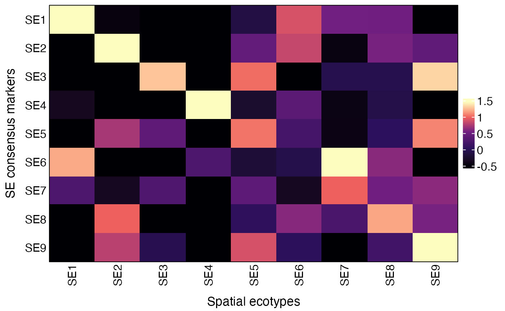
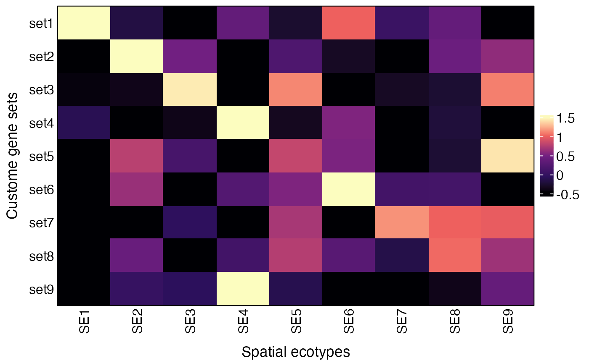

Recovering Spatial Ecotypes from Single-Cell RNA-seq Data
Source:vignettes/Recovery_scRNA.Rmd
Recovery_scRNA.RmdOverview
In this tutorial, we will illustrate how to recover spatial ecotypes (SEs) from single-cell RNA-seq.
First load required packages for this vignette
Data preparation
The recovery process requires a normalized gene expression matrix and a vector of cell type annotations.
Starting from a Seurat object
A Seurat v5 object for the demo data can be accessed from scRNAseq_demo_seurat_obj.rds.
First, load the seurat object into R:
url <- "https://spatialecotyper.stanford.edu/inc/inc.public.vignettes.php?file=scRNAseq_demo_seurat_obj.rds"
download.file(url, destfile = "scRNAseq_demo_seurat_obj.rds", mode = "wb")
# Load the seurat object
obj <- readRDS("scRNAseq_demo_seurat_obj.rds")
obj## An object of class Seurat
## 27425 features across 1337 samples within 1 assay
## Active assay: RNA (27425 features, 2000 variable features)
## 3 layers present: counts, data, scale.data
## 2 dimensional reductions calculated: pca, umap
# Cell type annotations
unique(obj$CellType)## [1] "Macrophage" "B" "CD4T" "CD8T" "Other"
## [6] "Fibroblast" "Epithelial" "Plasma"Next, normalize the gene expression data using SCTransform
or NormalizeData.
Here, we use NormalizeData for demonstration.
obj <- NormalizeData(obj, verbose = FALSE)Then, extract the normalized gene expression matrix and cell type annotations from the Seurat object.
normdata <- GetAssayData(obj, layer = "data")
head(normdata[, 1:5])## 6 x 5 sparse Matrix of class "dgCMatrix"
## AAACCTGCACATGACT-1 AAACCTGGTGGTCCGT-1 AAACCTGGTTTGTGTG-1
## AL627309.1 . . .
## AL627309.5 . . .
## AP006222.2 . . .
## AC114498.1 . . .
## AL669831.2 . . .
## LINC01409 . . .
## AAACCTGTCCGATATG-1 AAACCTGTCTAACGGT-1
## AL627309.1 . .
## AL627309.5 0.2951209 .
## AP006222.2 . .
## AC114498.1 . .
## AL669831.2 . .
## LINC01409 . .
ctann = obj$CellType
head(ctann)## AAACCTGCACATGACT-1 AAACCTGGTGGTCCGT-1 AAACCTGGTTTGTGTG-1 AAACCTGTCCGATATG-1
## "Macrophage" "B" "CD4T" "Macrophage"
## AAACCTGTCTAACGGT-1 AAACGGGCACTTAAGC-1
## "B" "CD8T"
table(ctann)## ctann
## B CD4T CD8T Epithelial Fibroblast Macrophage Other
## 97 138 425 121 44 374 91
## Plasma
## 47Starting from Sparse matrix
Sparse matrix in the .mtx format can be imported using the
ReadMtx function from the Seurat package.
## Load the gene expression matrix
scdata = ReadMtx(mtx = "https://spatialecotyper.stanford.edu/inc/inc.public.vignettes.php?file=scRNAseq_demo_matrix.mtx", features = "https://spatialecotyper.stanford.edu/inc/inc.public.vignettes.php?file=scRNAseq_demo_features.tsv",
cells = "https://spatialecotyper.stanford.edu/inc/inc.public.vignettes.php?file=scRNAseq_demo_barcodes.tsv", feature.column = 1, cell.column = 1)
## Normalize the data
normdata = NormalizeData(scdata)
head(normdata[, 1:5])
## Load cell type annotation
ctann = read.table("https://spatialecotyper.stanford.edu/inc/inc.public.vignettes.php?file=scRNAseq_demo_celltype_ann.tsv", sep = "\t",
header = TRUE, row.names = 1)
ctann = ctann[match(colnames(normdata), rownames(ctann)), 1]
table(ctann)Starting from tab-delimited files
Tab-delimited files can be loaded into R using the fread
function from the data.table package. The TSV file for the
expression matrix can be accessed from scRNAseq_demo_counts.tsv
and the cell type annotations are available in scRNAseq_demo_celltype_ann.tsv.
## Load the gene expression matrix
scdata = fread("https://spatialecotyper.stanford.edu/inc/inc.public.vignettes.php?file=scRNAseq_demo_counts.tsv", sep = "\t", data.table = FALSE)
rownames(scdata) = scdata[, 1] ## Set the first column as row names
scdata = scdata[, -1] ## Drop the first column
## Normalize the data
normdata = NormalizeData(scdata)
head(normdata[, 1:5])## AAACCTGCACATGACT-1 AAACCTGGTGGTCCGT-1 AAACCTGGTTTGTGTG-1
## AL627309.1 0 0 0
## AL627309.5 0 0 0
## AP006222.2 0 0 0
## AC114498.1 0 0 0
## AL669831.2 0 0 0
## LINC01409 0 0 0
## AAACCTGTCCGATATG-1 AAACCTGTCTAACGGT-1
## AL627309.1 0.0000000 0
## AL627309.5 0.2951209 0
## AP006222.2 0.0000000 0
## AC114498.1 0.0000000 0
## AL669831.2 0.0000000 0
## LINC01409 0.0000000 0
## Load cell type annotation
ctann = read.table("https://spatialecotyper.stanford.edu/inc/inc.public.vignettes.php?file=scRNAseq_demo_celltype_ann.tsv", sep = "\t",
header = TRUE, row.names = 1)
ctann = ctann[match(colnames(normdata), rownames(ctann)), 1]
table(ctann)## ctann
## B CD4T CD8T Epithelial Fibroblast Macrophage Other
## 97 138 425 121 44 374 91
## Plasma
## 47SE recovery
The RecoverSE function will be used to assign single cells into SEs. Users can either use default model to recover predefined SEs or use custom model to recover newly defined SEs.
Note: Cell type annotation (celltypes
argument) is required for SE recovery using RecoverSE.
Using default models
The default NMF models were trained on discovery MERSCOPE data, encompassing five cancer types: melanoma, and four carcinomas. These models are tailored to nine distinct cell types: B cells, CD4+ T cells, CD8+ T cells, NK cells, plasma cells, macrophages, dendritic cells, fibroblasts, and endothelial cells. Each model facilitates the recovery of SEs from single-cell datasets, allowing for cell-type-specific SE analysis.
For SE recovery, the cells in the query data should be grouped into one of “B”, “CD4T”, “CD8T”, “NK”, “Plasma”, “Macrophage”, “DC”, “Fibroblast”, and “Endothelial”, case sensitive. All the other cell types will be considered non-SE compartments.
## CID CellType InitSE SE PredScore
## AAACCTGCACATGACT-1 AAACCTGCACATGACT-1 Macrophage SE10 SE8 0.9958701
## AAACCTGGTGGTCCGT-1 AAACCTGGTGGTCCGT-1 B SE03 NonSE 0.5169725
## AAACCTGGTTTGTGTG-1 AAACCTGGTTTGTGTG-1 CD4T SE01 SE1 0.9999803
## AAACCTGTCCGATATG-1 AAACCTGTCCGATATG-1 Macrophage SE10 SE8 0.9920874
## AAACCTGTCTAACGGT-1 AAACCTGTCTAACGGT-1 B SE01 SE1 0.7673859
## AAACGGGCACTTAAGC-1 AAACGGGCACTTAAGC-1 CD8T SE03 NonSE 0.7605514
# Results:
### InitSE: Initial SE assignment
### SE: Final SE assignment (retaining only SE-specific cell states)
### PredScore: Prediction confidence score (default threshold ≥ 0.6 for high-confidence assignments)Using custom models
To use custom models, users should first develop recovery models following the tutorial NMF Model Development for Spatial Ecotype Recovery from Single-Cell and Spatial Transcriptomics Data. The resulting models can be used for SE recovery. An example model is available at SE_Recovery_W_list.rds.
Download the example models
url <- "https://spatialecotyper.stanford.edu/inc/inc.public.vignettes.php?file=SE_Recovery_W_list.rds"
download.file(url, destfile = "SE_Recovery_W_list.rds", mode = "wb")Load the custom models
## [1] "CD4T" "CD8T" "DC" "Endothelial" "Fibroblast"
## [6] "Macrophage" "NK" "Plasma"
head(Ws[[1]]) ## feature by SE matrix## SE01 SE02 SE03 SE04 SE05 SE06
## CD226__pos 0.4145936 0.2555579 0.3323735 0.3241147 0.2263783 0.3279133
## CDKN1B__pos 0.5729663 0.4552065 0.5120732 0.4627805 0.4453117 0.5156023
## CXCR4__pos 0.5865790 0.2771225 0.4093821 0.3607076 0.3589891 0.3937211
## DUSP1__pos 0.4233067 0.3462390 0.2269798 0.1616814 0.3265539 0.2562118
## KLF2__pos 0.5889618 0.2314586 0.3867504 0.2295206 0.2998234 0.5173246
## ICAM2__pos 0.4593230 0.2611751 0.4427930 0.3143084 0.3679498 0.4532637
## SE07 SE08 SE09 SE10 SE11
## CD226__pos 0.2189382 0.3417897 0.2563481 0.2360192 0.2815938
## CDKN1B__pos 0.4414750 0.4747166 0.4414508 0.3922732 0.3821411
## CXCR4__pos 0.3751669 0.4456410 0.3023204 0.2629156 0.2729461
## DUSP1__pos 0.3682236 0.2211759 0.1713413 0.1699067 0.1121763
## KLF2__pos 0.3570251 0.4327206 0.1732251 0.2086729 0.2118797
## ICAM2__pos 0.2660441 0.5494585 0.2878338 0.3711269 0.2575091Using custom models for SE recovery by specifying the Ws
argument.
After prediction, we recommend retaining only assignments corresponding to SE-specific cell states identified in Tutorial 4. Cells not assigned to these SE-specific states should be grouped as “NonSE,” as they cannot be robustly mapped to the corresponding SE.
The SE recovery output contains five columns: cell ID (CID), cell type (CellType), initial SE assignment (InitSE), final SE assignment (SE), and prediction score (PredScore). By default, assignments with PredScore ≥ 0.6 are retained as high-confidence results. For custom models, users are encouraged to determine the optimal threshold based on leave-one-sample-out cross-validation performance.
Validation: co-association of SE cell states across samples
After recovering SE-specific cell states from single-cell RNA-seq data, users can validate the SEs by testing whether cell states belonging to the same SE are more co-occur than expected by random chance using the Coassociation function. The sample, cell type, and SE annotations are required for the analysis.
Note: By default (test = TRUE), the
function evaluates the significance of cell state co-localization within
each SE and returns a vector of p-values. This analysis requires cell
state names to follow the format “SE1_CD4T”, where an underscore
separates the SE label from the cell type, enabling extraction of SE
groupings from the cell state names.
scRNA-seq data from multiple samples are required for the co-association analysis. For demonstration here, we randomly partition the cells into 10 samples.
sepreds$Sample = paste0("S", sample(1:10, nrow(sepreds), replace = TRUE))
result = Coassociation(sepreds, Sample = "Sample", SE = "SE",
CellType = "CellType", nperm = 10, test = TRUE)
head(result$CoassociationIndex[, 1:5])## NonSE_B NonSE_CD4T NonSE_CD8T NonSE_Epithelial
## NonSE_B 1.0000000 0.3602682 -0.65464650 0
## NonSE_CD4T 0.3602682 1.0000000 -0.32959553 0
## NonSE_CD8T -0.6546465 -0.3295955 1.00000000 0
## NonSE_Epithelial 0.0000000 0.0000000 0.00000000 0
## NonSE_Fibroblast 0.2976043 0.3814147 -0.06894542 0
## NonSE_Macrophage -0.1866630 -0.4344231 0.34276192 0
## NonSE_Fibroblast
## NonSE_B 0.29760427
## NonSE_CD4T 0.38141469
## NonSE_CD8T -0.06894542
## NonSE_Epithelial 0.00000000
## NonSE_Fibroblast 1.00000000
## NonSE_Macrophage -0.45071011
result$Pval## NonSE SE1 SE2 SE3 SE4 SE5
## 0.0101113020 0.0025226006 0.0219442277 0.0008433595 0.0112660875 0.0030455264
## SE6 SE7 SE8 SE9
## 0.0464709477 0.0019557140 0.0072093034 0.1648902739The results can be visualized on a heatmap using the CooccurrenceHeatmapView function, as described in the Tutorial 5.
Validation: average expression of SE markers
Users can also validate the SEs by visualizing the average expression of SE consensus markers across recovered SEs using the AverageMarkerExpression function.
## The function is built on Seurat functions, so first create a Seurat object.
obj = CreateSeuratObject(scdata, meta.data = sepreds)
obj = NormalizeData(obj)
## Visualize the SE consensus markers across recovered SEs
res = AverageMarkerExpression(obj, group.by = "SE")
plot(res$p)
# Underlying data
res$AvgExp## SE1 SE2 SE3 SE4 SE5 SE6
## SE1 1.7226210 -0.4808165 -1.37812573 -0.7932777 -0.12119184 0.89883571
## SE2 -1.4235863 1.5681755 -0.87334402 -1.0696721 0.44526793 0.83310459
## SE3 -0.9306379 -0.5253121 1.28899508 -1.3508876 1.02461713 -0.73094717
## SE4 -0.3669122 -0.5223084 -0.67161097 2.5314673 -0.26216553 0.37672915
## SE5 -1.4190490 0.7253804 0.40100985 -1.6623573 1.04279924 0.21922679
## SE6 1.2032238 -1.2089301 -1.11642464 0.2684502 -0.20245895 -0.06927059
## SE7 0.2735315 -0.3599430 0.29691730 -2.3988709 0.39381762 -0.36290540
## SE8 -1.7136966 0.9917886 -0.98188362 -0.9680352 0.05523798 0.61423295
## SE9 -1.7816063 0.7895189 -0.03543357 -0.7629782 0.89279834 0.03679885
## SE7 SE8 SE9
## SE1 0.54574629 0.53621566 -0.9300069
## SE2 -0.46650719 0.56639614 0.4201654
## SE3 -0.05793118 -0.05255440 1.3346582
## SE4 -0.45121319 -0.07413200 -0.5598542
## SE5 -0.44783144 0.04643455 1.0943869
## SE6 1.52062350 0.61973372 -1.0149469
## SE7 0.99065113 0.53876443 0.6280373
## SE8 0.24681625 1.19097921 0.5645604
## SE9 -0.79763092 0.19321472 1.4653182The AverageMarkerExpression
function can also be used to visualize average expression of other gene
lists by specifying the genesets parameter, which should be
a list of gene sets.
genesets = list(set1 = c("FOS", "EGR1", "DUSP1", "JUNB", "JUN", "FOSB"),
set2 = c("SPP1", "CCL2", "MMP9"),
set3 = c("CXCL12", "TGFBR2", "PDK4", "HLA-DMA"),
set4 = c("ACTA2", "CAV1", "CLDN5"),
set5 = c("LRP1", "MAFB"),
set6 = c("CXCL2", "NFKBIA", "CDKN1A"),
set7 = c("STAT1", "TAP1", "HLA-A", "HLA-B", "HLA-C", "B2M"),
set8 = c("PKM", "PCNA", "BST2"),
set9 = c("NRP1", "ITGB1", "CD276"))
res = AverageMarkerExpression(obj, group.by = "SE", genesets = genesets)
plot(res$p)
Session info
The session info allows users to replicate the exact environment and identify potential discrepancies in package versions or configurations that might be causing problems.
## R version 4.4.1 (2024-06-14)
## Platform: aarch64-apple-darwin20
## Running under: macOS 26.4.1
##
## Matrix products: default
## BLAS: /Library/Frameworks/R.framework/Versions/4.4-arm64/Resources/lib/libRblas.0.dylib
## LAPACK: /Library/Frameworks/R.framework/Versions/4.4-arm64/Resources/lib/libRlapack.dylib; LAPACK version 3.12.0
##
## locale:
## [1] en_US.UTF-8/en_US.UTF-8/en_US.UTF-8/C/en_US.UTF-8/en_US.UTF-8
##
## time zone: America/Los_Angeles
## tzcode source: internal
##
## attached base packages:
## [1] parallel stats graphics grDevices utils datasets methods
## [8] base
##
## other attached packages:
## [1] SpatialEcoTyper_1.0.2 NMF_0.28 Biobase_2.64.0
## [4] BiocGenerics_0.50.0 cluster_2.1.6 rngtools_1.5.2
## [7] registry_0.5-1 RANN_2.6.2 Matrix_1.7-0
## [10] data.table_1.16.0 Seurat_5.1.0 SeuratObject_5.0.2
## [13] sp_2.1-4 ggplot2_3.5.1 dplyr_1.1.4
##
## loaded via a namespace (and not attached):
## [1] RcppAnnoy_0.0.22 splines_4.4.1 later_1.3.2
## [4] tibble_3.2.1 polyclip_1.10-7 fastDummies_1.7.4
## [7] lifecycle_1.0.4 sf_1.1-0 doParallel_1.0.17
## [10] pals_1.9 globals_0.16.3 lattice_0.22-6
## [13] MASS_7.3-60.2 magrittr_2.0.3 plotly_4.10.4
## [16] sass_0.4.9 rmarkdown_2.28 jquerylib_0.1.4
## [19] yaml_2.3.10 httpuv_1.6.15 sctransform_0.4.1
## [22] spam_2.10-0 spatstat.sparse_3.1-0 reticulate_1.39.0
## [25] mapproj_1.2.11 cowplot_1.1.3 pbapply_1.7-2
## [28] DBI_1.3.0 RColorBrewer_1.1-3 maps_3.4.2
## [31] abind_1.4-5 Rtsne_0.17 purrr_1.0.2
## [34] circlize_0.4.16 IRanges_2.38.1 S4Vectors_0.42.1
## [37] ggrepel_0.9.6 irlba_2.3.5.1 listenv_0.9.1
## [40] spatstat.utils_3.1-0 units_1.0-1 goftest_1.2-3
## [43] RSpectra_0.16-2 spatstat.random_3.3-1 fitdistrplus_1.2-1
## [46] parallelly_1.38.0 pkgdown_2.1.0 leiden_0.4.3.1
## [49] codetools_0.2-20 tidyselect_1.2.1 shape_1.4.6.1
## [52] matrixStats_1.4.1 stats4_4.4.1 spatstat.explore_3.3-2
## [55] jsonlite_1.8.8 GetoptLong_1.0.5 e1071_1.7-16
## [58] progressr_0.14.0 ggridges_0.5.6 survival_3.6-4
## [61] iterators_1.0.14 systemfonts_1.1.0 foreach_1.5.2
## [64] tools_4.4.1 ragg_1.3.2 ica_1.0-3
## [67] Rcpp_1.0.13 glue_1.7.0 gridExtra_2.3
## [70] xfun_0.52 withr_3.0.1 BiocManager_1.30.25
## [73] fastmap_1.2.0 boot_1.3-30 fansi_1.0.6
## [76] spData_2.3.4 digest_0.6.37 R6_2.5.1
## [79] mime_0.12 wk_0.9.5 textshaping_0.4.0
## [82] colorspace_2.1-1 scattermore_1.2 tensor_1.5
## [85] dichromat_2.0-0.1 spatstat.data_3.1-2 utf8_1.2.4
## [88] tidyr_1.3.1 generics_0.1.3 class_7.3-22
## [91] httr_1.4.7 htmlwidgets_1.6.4 spdep_1.4-2
## [94] uwot_0.2.2 pkgconfig_2.0.3 gtable_0.3.5
## [97] ComplexHeatmap_2.20.0 lmtest_0.9-40 htmltools_0.5.8.1
## [100] dotCall64_1.1-1 clue_0.3-65 scales_1.3.0
## [103] png_0.1-8 spatstat.univar_3.0-1 knitr_1.48
## [106] rstudioapi_0.16.0 reshape2_1.4.4 rjson_0.2.22
## [109] nlme_3.1-164 proxy_0.4-27 cachem_1.1.0
## [112] zoo_1.8-12 GlobalOptions_0.1.2 stringr_1.5.1
## [115] KernSmooth_2.23-24 miniUI_0.1.1.1 s2_1.1.9
## [118] desc_1.4.3 pillar_1.9.0 grid_4.4.1
## [121] vctrs_0.6.5 promises_1.3.0 xtable_1.8-4
## [124] evaluate_0.24.0 magick_2.8.5 cli_3.6.3
## [127] compiler_4.4.1 rlang_1.1.4 crayon_1.5.3
## [130] future.apply_1.11.2 classInt_0.4-11 plyr_1.8.9
## [133] fs_1.6.4 stringi_1.8.4 viridisLite_0.4.2
## [136] deldir_2.0-4 gridBase_0.4-7 munsell_0.5.1
## [139] lazyeval_0.2.2 spatstat.geom_3.3-2 RcppHNSW_0.6.0
## [142] patchwork_1.2.0 future_1.34.0 shiny_1.9.1
## [145] highr_0.11 ROCR_1.0-11 igraph_2.0.3
## [148] bslib_0.8.0